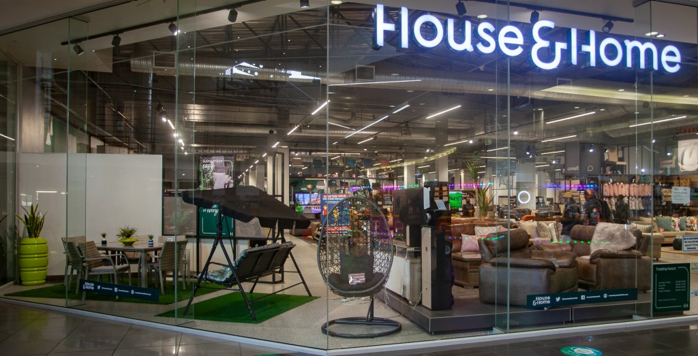
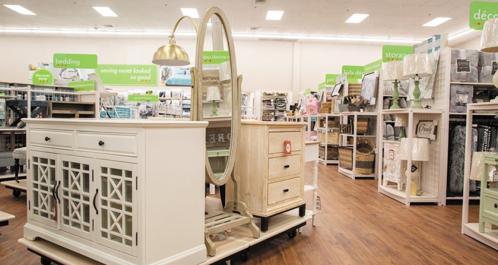

HOUSE&HOME
 House & Home is a Trading Division of Shoprite Checkers (Pty) Ltd, operating throughout Africa. We are conveniently located across South Africa, in the Free State, North West, Northern, Western and Eastern Cape, Gauteng, Limpopo, Mpumalanga, and KwaZulu-Natal as well as Botswana and Namibia. Each House & Home store presents its customers with an exciting, top-notch shopping experience. Customers are spoiled for choice with affordable, exclusive and well-known furniture, appliance and home entertainment brands the best local and imported ranges at the very best prices. Deals can be tailored to support individual payment requirements, including cash, lay-by or credit terms. When it comes to service, we are unbeatable, because we pride ourselves on giving our customers exactly what they want, when they want it, and at the price they deserve.